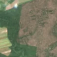

5,3 ha · Sârbii-Măgura, com. Stolnici
văzută schimbată prima dată pe 24 mai 2026

Autorizația cea mai apropiată nu acoperă tăierea: schimbarea cade în afara parcelei autorizate.
APV 2100178504290 · Ocolul Silvic Costești, la 10 m
Ce se vede în poze: În «poza detaliată» din «înainte», zona marcată este acoperită de coroane dense de copaci, deci era pădure închisă. În «după» apare un teren maro-deschis, fără coroane, pe o suprafață largă, ceea ce arată că pădurea a fost tăiată.
în arie protejată: Pădurea și Lacul Stolnici